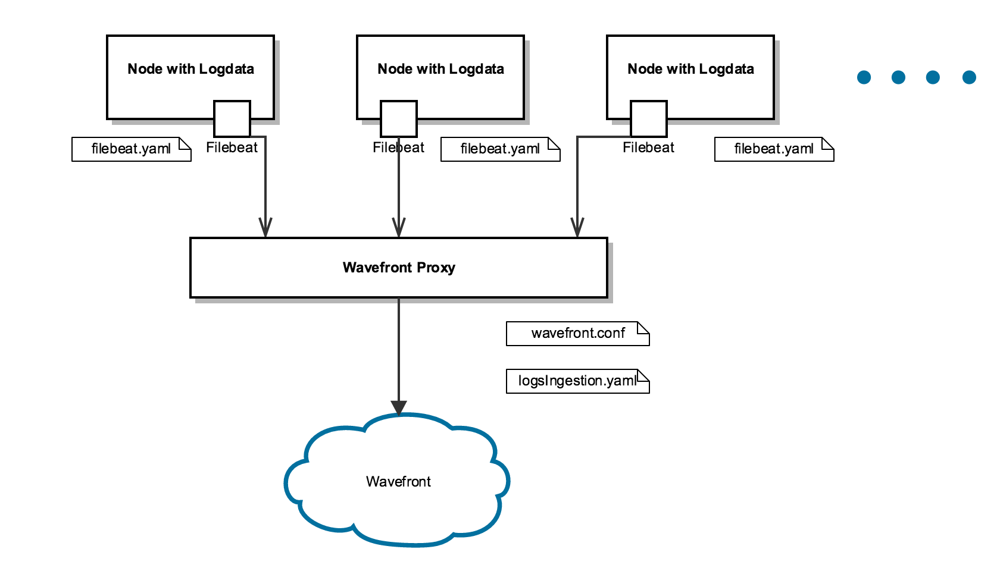

Usually the best way to send metrics to a monitoring system is to us a metrics library. However, sometimes you have a legacy system, or a system that is difficult to modify, and you want to garner metrics from log data. This article describes two methods for sending log data metrics directly to your Wavefront proxy: Filebeat and TCP. These methods are supported in Wavefront proxy 4.4 and higher.
Both methods set up metrics harvesting with aggregation, in that time series are held in memory and periodically flushed to Wavefront. This allows you to control your points-per-second, and it also allows you to aggregate the same metric across multiple nodes. However, this has the limitation that each individual metric must always arrive at the same Wavefront proxy. If you only use one Proxy you don’t have to worry about this, but if you have a multi-Proxy deployment, the easiest way is to send all of your logs to the same Proxy. That way each metric only has one possible pool for aggregation.
Configuring the Wavefront Proxy to Ingest Log Data
In this example, we configure Wavefront to parse Combined Apache Logs, which is a common logging format for many web services (for example, NGINX). The example is merely a starting point – by the end you will see how to ingest metrics from any log format.
Configuring the Wavefront Proxy to Listen for Log Data
In your Wavefront proxy configuration file, add these new entries:
filebeatPort=5044
rawLogsPort=5055
logsIngestionConfigFile=/etc/wavefront/wavefront-proxy/logsIngestion.yaml
These entries instruct the Wavefront proxy to listen for log data in various formats: on port 5044 it listens using the Lumberjack protocol, which works with Filebeat, and on port 5055 it listens for raw logs data over a TCP socket as a UTF-8 encoded string (which works with Splunk, and many others).
Configuring the Wavefront Proxy to Add Structure to Log Data
You use grok patterns (similar to Logstash) to add structure to your log data. To do this, open the logsIngestion.yaml file (which may be empty) you specified in the Proxy configuration file, and write this example config which specifies basic instructions for parsing log data:
aggregationIntervalSeconds: 5 # Metrics are aggregated and sent at this interval
counters:
- pattern: '%{COMBINEDAPACHELOG}'
metricName: 'combined_apache_log_lines' # +1 for every log line matching this pattern
gauges:
- pattern: '%{COMBINEDAPACHELOG}'
metricName: 'apacheStatus'
valueLabel: 'response' # Which value should be pulled from the COMBINEDAPACHELOG grok? Instantaneous value of most recently parsed HTTP return response code.
histograms:
- pattern: '%{COMBINEDAPACHELOG}'
metricName: 'responseBytes'
valueLabel: 'bytes'
# A helpful example below, this one won't parse any nginx logs.
- pattern: 'My operation took %{NUMBER:duration} seconds'
metricName: 'myOperationDuration'
valueLabel: 'duration'
This configuration file is parsed as a POJO; see the javadoc for more details on each field. Log lines are given structure with java-grok, which is the syntax for the Logstash grok plugin. Then, through valueLabel, you can specify which part of the log line contains the metrics to send to Wavefront. There are three supported modes of aggregation: counters, gauges, and histograms. See Dropwizard documentation for more.
You can think of grok patterns as regexes with macros. Each macro can be made up of sub-macros, and each macro can bind a substring to a given label. For example:
LOGLEVEL (INFO|WARNING|ERROR)
BASE_FORMAT %{LOGLEVEL:level} %{NUMBER:timestamp}
FULL_FORMAT %{BASE_FORMAT} my operation took %{NUMBER:value} seconds.*
FULL_FORMAT above would match a log line such as:
INFO 1476925272 my operation took 42 seconds (and other info here)
In the above example, the log message has a timestamp. You can use this timestamp to match the message for ingestion, but Wavefront always ingests the resulting metric at the time the Wavefront proxy sees the log, not the time the message was logged in your system. Therefore, the resulting metric would be: myOperationDuration 42 <proxy time> source=<host>
The Wavefront proxy includes these patterns and you can always add more.
Notes on Specifying Grok Patterns
- Bugs in grok patterns can be frustrating to debug. Try your grok pattern with a sample log line in one of the grok parsing debugger tools (e.g. grok debugger).
- As in the examples above, use single quotes unless you need double quotes. YAML parsers escape sequences inside double quotes, which is usually not what you want (e.g. “\n” will be the newline character).
- Remember grok patterns expand to regex patterns. This means if you wanted to capture a number inside brackets, you would need ‘\[NUMBER:myNum\]’ or “\\[NUMBER:myNum\\]” (for point 2 above). A regex debugger may be helpful.
- The Wavefront proxy javadoc contains advanced grok examples.
Testing Grok Patterns in Interactive Mode
To test grok patterns before sending data to Wavefront, you can run the proxy in a mode where it reads lines from stdin and prints the generated metric when there is a match with a pattern in logsIngestionConfig.yaml. To run the proxy in test mode:
java -jar /opt/wavefront/wavefront-proxy/bin/wavefront-push-agent.jar -f /etc/wavefront/wavefront-proxy/wavefront.conf --testLogs < foo.txt
where foo.txt has, e.g.
counter foo 42
...
You can also omit ``< foo.txt` to use interactive terminal mode.
Updating Log Ingestion Configuration
You can update the log ingestion configuration and the Wavefront proxy 4.4 will hot load the log ingestion configuration file while running:
- Edit the log ingestion configuration file and save.
-
To verify that the updated file loaded successfully, open the Wavefront proxy log file and look for a log message like:
INFO: Loaded new config: <config_json>If there is a problem with the updated configuration, you’ll see a log line like this:
WARNING: Could not load a new logs ingestion config file, check above for a stack trace.
Sending Log Data to a Wavefront Proxy With Filebeat
This section describes how to send log data to a Wavefront proxy using Filebeat.
The Wavefront proxy automatically assigns metrics a source according to the machine that sent corresponding log data. This is done with Filebeat host metadata – so each host should be able to resolve its own hostname; otherwise the IP address is used.
Direct Log Ingestion Architecture (Filebeat)

Instructions
- Install Filebeat on any production node that has log data to send to Wavefront:
-
For Ubuntu:
curl -L -O https://artifacts.elastic.co/downloads/beats/filebeat/filebeat-5.0.1-amd64.deb sudo dpkg -i filebeat-5.0.1-amd64.deb -
For Redhat:
curl -L -O https://artifacts.elastic.co/downloads/beats/filebeat/filebeat-5.0.1-x86_64.rpm sudo rpm -vi filebeat-5.0.1-x86_64.rpm
The default config file is very well commented and is in
/etc/filebeat/filebeat.yml. This deployment sends NGINX logs to a Logstash worker. -
# Exhaustive example: https://raw.githubusercontent.com/elastic/filebeat/master/etc/filebeat.yml
# Docs: https://www.elastic.co/guide/en/beats/filebeat/current/configuration-filebeat-options.html
filebeat:
prospectors:
# Each - is a prospector. Below are the prospector specific configurations
-
paths:
- /var/log/nginx/*.log
input_type: log
# You usually want tail_files: true. Wavefront shows the ingestion timestamp to be when a log line
# was received, not when it was written to your logfile. For this reason, ingesting back-in-time
# data will surprise you unless you are expecting that.
tail_files: true
# This is important if you have some kind of log rotator. Filebeat won't let go of an open FD
# of a rotated file without this option.
close_inactive: 5m
registry_file: /var/lib/filebeat/registry
output:
logstash: # Even though we're sending directly to the Wavefront proxy, we use this. The protocol (Lumberjack) is the same.
hosts: ["wavefront-proxy.mycompany.com:5044"] # Replace this with the host:port of your Wavefront proxy
logging:
to_syslog: false
to_files: true
files:
path: /var/log/filebeat
name: filebeat.log
rotateeverybytes: 10485760 # = 10MB
keepfiles: 7
# Available log levels are: critical, error, warning, info, debug
level: info
-
Start Filebeat:
sudo service filebeat restartTo confirm that Filebeat is sending log data, run
tail -100 /var/log/filebeat/filebeat.logYou should see lines like this:
2016-10-19T22:27:32Z INFO Harvester started for file: /home/ubuntu/foo.log 2016-10-19T22:27:37Z INFO Events sent: 20048 2016-10-19T22:27:37Z INFO Registry file updated. 1 states written. 2016-10-19T22:27:40Z INFO Events sent: 20048 2016-10-19T22:27:40Z INFO Registry file updated. 1 states written. 2016-10-19T22:27:42Z INFO Events sent: 11647In the Wavefront proxy log, there will be log entries indicating it is connected to Filebeat:
Nov 21, 2016 11:19:17 AM New filebeat connection
Filebeat keeps a registry file (in the above config, at /var/lib/filebeat/registry) that tells Filebeat where it left off in the event of a shutdown. To start from a clean state, stop Filebeat, clear this file, and start Filebeat.
Sending Log Data to a Wavefront Proxy With TCP
This section describes how to send log data to a Wavefront proxy over a TCP socket. A typical use case would be to send Splunk data.
The Wavefront proxy automatically assigns metrics a source according to the machine that sent the log data. The Proxy first tries a reverse DNS lookup; if that fails, the IP address is used.
Direct Log Ingestion Architecture (Raw TCP / Splunk)

Instructions
These instructions are tailored for Splunk integration, but you can send any newline-separated payload to the Wavefront proxy.
Forward data to third-party systems shows how you can fork your log data from Splunk to a third-party system. Add the following to your outputs.conf file:
[tcpout]
[tcpout:fastlane]
server = <my_wavefront_proxy_ip>:5055
sendCookedData = false
Querying Log Data
After configuring the Wavefront proxy to send log data, you could issue a queries such as:
rate(ts(combined_apache_log_lines))
ts(responseBytes.p99)